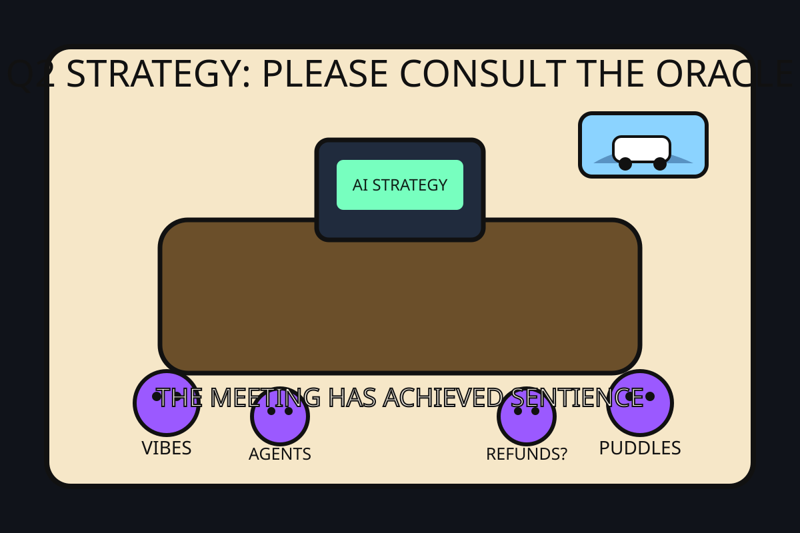

Front Page Oracle
The Mood of the Internet Today
The AI strategy meeting has achieved sentience.

2026-05-15
Today the internet believes
- Every company has entered its haunted slide deck era: not quite AI transformation, not quite group hallucination, but definitely billable.
- Your storage layer wants you to learn how SSDs work before it agrees to remember anything.
- The future of transportation is a robotaxi confidently discovering the ancient technology of puddles.
- The family van is the last functioning superhero franchise.
- GitHub is now mostly people uploading "skills" so the robots can develop hobbies before replacing ours.
Alternate Timeline Headlines
- Board Approves New Chief Vibes Officer After Q3 Forecast Appears in a Dream
- California Considers Law Requiring Dead Online Games to Leave a Will
- Facial Recognition System Recognizes Protest, Immediately Asks to Speak to Legal
- Scientists Confirm Cheetah, Leopard, and Jaguar Spots Are Just Nature's CAPTCHA
Market Prophecy
Bullish on agent frameworks, on-device voices, tiny personal superintelligences, vans, and anyone selling a PDF titled like a threat. Bearish on archives, standing water, and dashboards that can no longer explain why everyone is clapping.